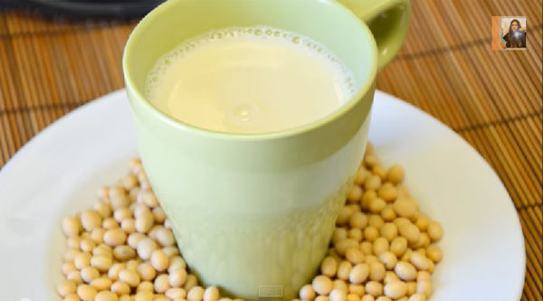

กลับสู่หน้าแรก
วิธีการทำน้ำเต้าหู้

ส่วนผสม น้ำเต้าหู้
- ถั่วเหลือง 16 ออนซ์ (453 กรัม)
- ถั่วลิสง 1 ถ้วย
- อัลมอนด์ 1 ถ้วย
- น้ำเปล่า
- น้ำตาลทรายแดง หรือน้ำตาลทรายขาว (สำหรับเพิ่มความหวาน)
วิธีการทำ น้ำเต้าหู้
- ใส่ถั่วเหลือง ถั่วลิสง และอัลมอนด์ลงในอ่างผสมแล้วล้างให้สะอาด
- จากนั้นแช่น้ำให้ท่วมทิ้งไว้อย่างน้อย 8 ชั่วโมง (หลังจากแช่น้ำทิ้งไว้จนครบเวลาแล้ว ถั่วที่ได้จะพองขึ้นเป็น 3 เท่า)
- ใส่ถั่วที่แช่น้ำแล้ว 3 ถ้วยลงในเครื่องปั่น
- ตามด้วยน้ำเปล่า 6 ถ้วย (อัตราส่วน 1:3) แล้วปั่นประมาณ 1-2 นาทีจนส่วนผสมเนียนละเอียด
- นำส่วนผสมที่ปั่นละเอียดแล้วมากรองด้วยผ้าขาวบาง บีบเอาเฉพาะน้ำ ใส่หม้อ เตรียมไว้
- นำน้ำถั่วเหลืองขึ้นตั้งไฟต้มจนเดือดและมีฟอง (หมั่นคนผสมเรื่อย ๆ เพื่อไม่ให้ส่วนผสมไหม้) ปิดไฟ
- ตักนมถั่วเหลืองที่ได้ใส่แก้ว เติมน้ำตาลทรายแดงลงไปตามชอบ คนผสมให้เข้ากัน พร้อมดื่ม หรือพักไว้จนเย็น เทใส่ขวดเก็บไว้แช่ในตู้เย็นได้นาน 3 วัน